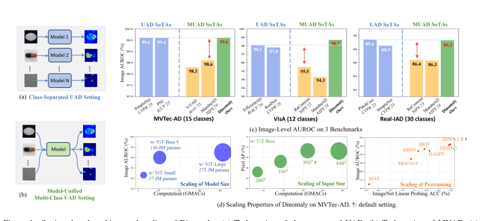
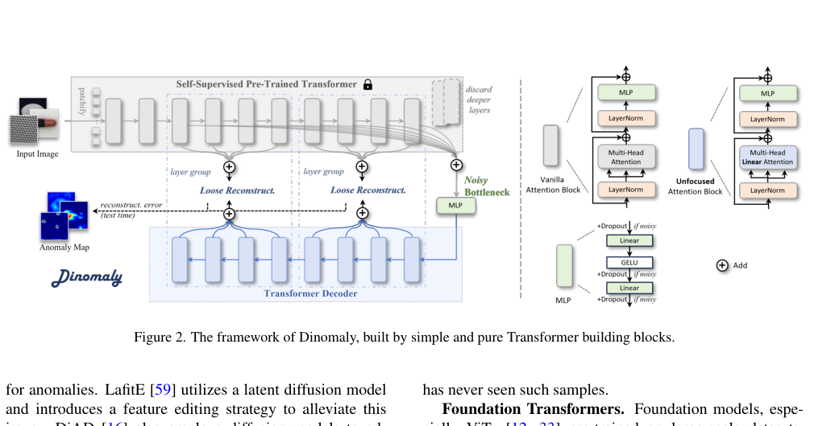
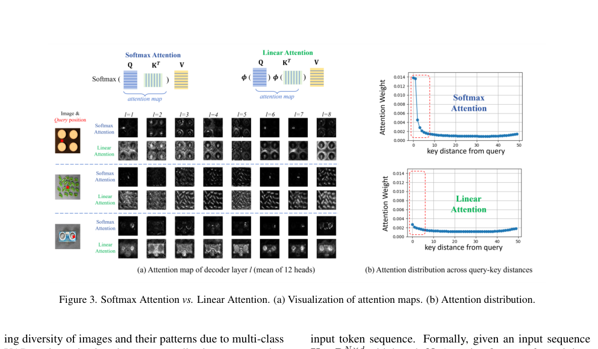
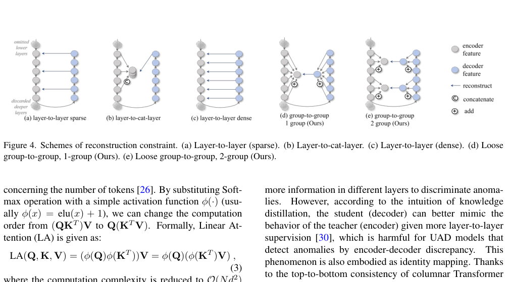
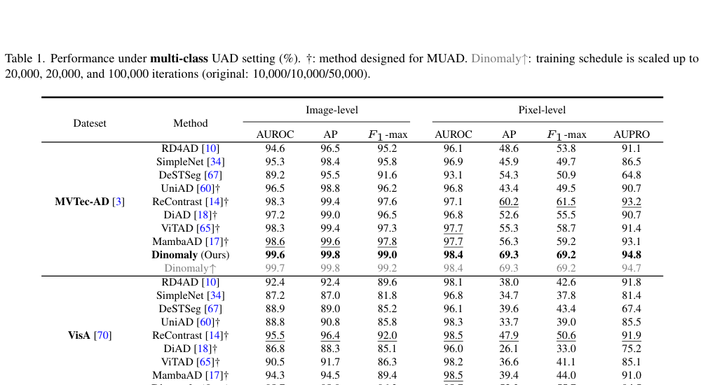
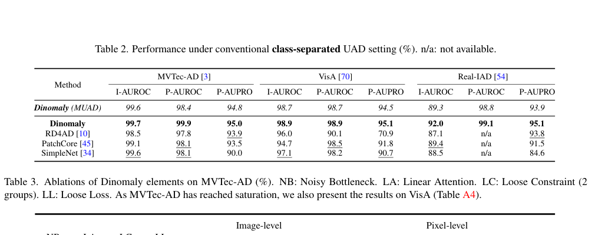
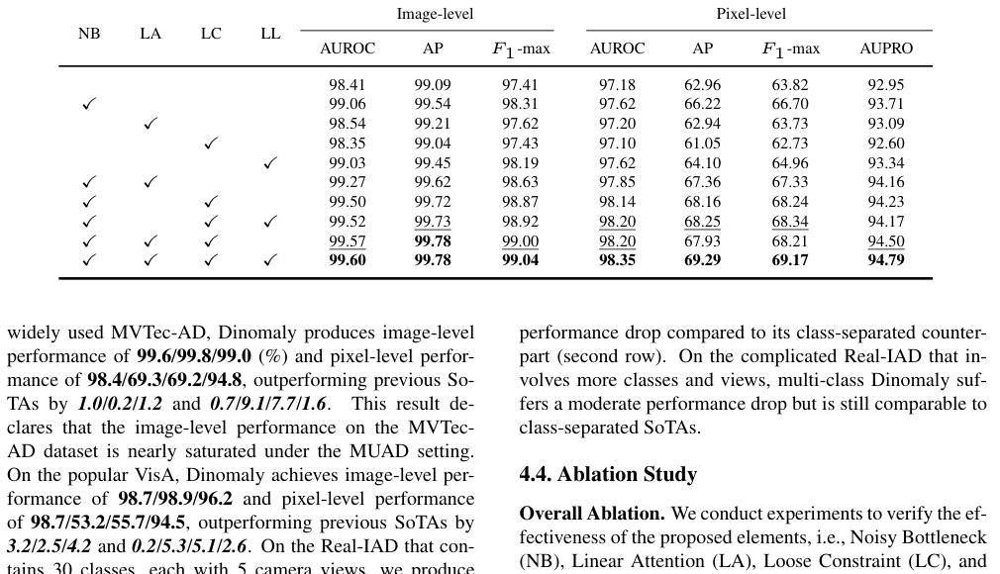
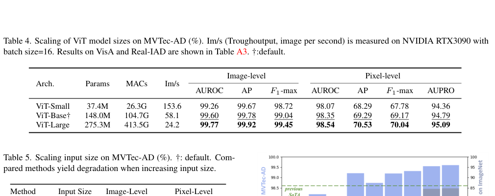
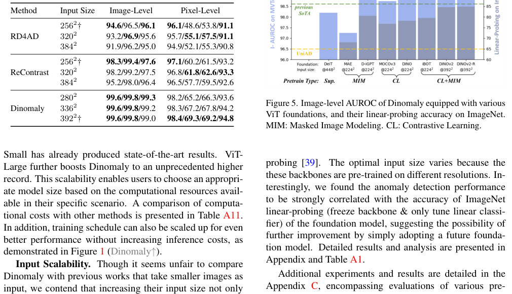

PAPERNOTE / FULL PAPER REVIEW
2025 · CVPRDinomaly: The Less Is More Philosophy in Multi-Class Unsupervised Anomaly Detection
本頁依據使用者提供的 CVPR 2025 原始 PDF 整理。圖表由原始 PDF 頁面裁切；數據與章節說明以論文正文為準，未提供於正文的附錄細節不自行推測。
ABSTRACT / 論文摘要
摘要與研究概覽
本文提出 Dinomaly，一種極簡的多類別非監督異常偵測（Multi-Class Unsupervised Anomaly Detection, MUAD）框架。相較於每個物件類別各自訓練一個模型，MUAD 以單一模型處理多種類別，能降低模型儲存與部署成本；但不同類別的正常樣態差異很大，容易使模型過度泛化，連未見過的異常樣本也能被重建，形成 identity mapping 問題。
Dinomaly 以預訓練 Vision Transformer 為特徵編碼器，並透過四項簡潔設計改善此問題：使用 MLP 中既有的 Dropout 建立 Noisy Bottleneck、採用不易聚焦於單一位置的 Linear Attention、放寬 encoder-decoder 的重建對應，以及搭配 hard-mining global cosine loss。作者在 MVTec-AD、VisA 與 Real-IAD 上進行實驗，基本設定的 image-level AUROC 分別達 99.6%、98.7% 與 89.3%。
PAPER INFORMATION / 論文資訊
Guo, J., Lu, S., Zhang, W., Chen, F., Li, H., & Liao, H. (2025). Dinomaly: The Less Is More Philosophy in Multi-Class Unsupervised Anomaly Detection. Proceedings of the IEEE/CVF Conference on Computer Vision and Pattern Recognition (CVPR).
DOI：10.1109/CVPR52734.2025.01900
作者程式碼：github.com/guojiajeremy/Dinomaly
整理範圍：原論文 Abstract、Sections 1–5、Figures 1–5、Tables 1–5。本文正文引用附錄的地方僅依可見敘述整理，不補造未提供的附錄數值。
01 / INTRODUCTION
第一章：研究背景與問題定義
1.1 非監督異常偵測（UAD）
UAD 的目標是只利用正常影像建立模型，在推論時辨識偏離正常模式的異常影像，並定位異常區域。由於實務場景中的異常種類多樣且難以事先完整收集，訓練資料通常只包含正常樣本。應用包含工業瑕疵檢測、醫療影像篩檢與監控。
1.2 從單類別模型走向多類別統一模型
傳統 class-separated UAD 為每一個物件類別分別訓練模型，雖可維持各類別專屬的正常分布邊界，但類別數增加時，模型儲存與部署成本也會增加。Multi-Class UAD（MUAD）改以單一模型處理多個類別，降低部署負擔；其困難在於不同類別的正常外觀差異大，使統一模型可能學到過於寬鬆的重建規則。
1.3 核心問題：Identity Mapping／Over-Generalization
- 若 encoder-decoder 對輸入特徵形成近似複製的 identity mapping，正常與異常特徵都可能被重建。
- 重建式 UAD 仰賴「正常特徵可被重建、異常特徵較難重建」的差異；過度泛化會縮小這個差異，降低 anomaly score 的辨識力。
- 既有方法常加入人工合成異常或特徵擾動，但這類策略可能依賴資料集與領域設計。

- MUAD 可降低多類別場景的模型儲存與部署負擔。
- 類別多樣性會使模型過度泛化，異常特徵也可能被重建。
- Dinomaly 的研究目標是在不依賴複雜額外模組的前提下，重新建立正常與異常重建能力的差異。
03 / METHOD
第三章：Dinomaly 方法架構
3.1 Dinomaly Framework
整體由 encoder、bottleneck 與 reconstruction decoder 組成。預設使用 12 層預訓練 ViT 作為 encoder，抽取不同語意層級特徵；MLP bottleneck 收集 encoder 第 8 個中間層的特徵；decoder 使用 8 層 Transformer，學習重建 encoder 的中間層特徵。訓練時以 cosine similarity 建立特徵重建目標；推論時正常區域應能重建，異常區域則預期產生較大的重建差異。

3.2 Noisy Bottleneck
作者將 MUAD 的 identity mapping 視為 over-generalization。傳統方法常在輸入影像或 encoder feature 上人工合成異常，再要求 decoder 還原正常訊號；Dinomaly 改為啟用 MLP bottleneck 中既有的 Dropout，隨機丟棄神經元活化，讓特徵受到擾動。Dropout 因此扮演 pseudo feature anomaly 的角色，迫使 decoder 學習從受擾動的正常表徵恢復特徵，而不是單純複製輸入。
3.3 Unfocused Linear Attention
Softmax Attention 可能將注意力集中在與 query 對應的局部位置，容易傳遞相同位置資訊。Linear Attention 的注意力分布較分散，利用較多長距離資訊完成特徵重建，降低模型直接複製相同位置特徵的機會。作者也指出 Linear Attention 具有較低計算複雜度。

3.4 Loose Reconstruction
既有 feature reconstruction 方法常採 layer-to-layer 或 point-to-point 的密集對應，可能讓 decoder 過度模仿 encoder。Dinomaly 將多個 encoder／decoder 層分組，以 group-to-group 方式建立較寬鬆的重建關係，降低逐層、逐點複製的限制。

3.5 Loose Loss／Hard-Mining Global Cosine Loss
作者使用 hard-mining global cosine loss，對重建已經良好的特徵點降低梯度影響，將學習重點放在較難重建的特徵。論文說明，對 batch 中 cosine distance 較小的 k% 特徵點，將 decoder 梯度縮小至原本的十分之一；整體損失再對各 encoder-decoder feature pair 取平均。
- 架構由 ViT encoder、MLP bottleneck 與 Transformer decoder 組成。
- Noisy Bottleneck 使用 Dropout 擾動特徵，抑制 identity mapping。
- Linear Attention 以較分散的注意力降低局部資訊直接複製。
- Loose Reconstruction 放寬 encoder-decoder 的層級對應；Loose Loss 降低容易重建特徵點的梯度。
04 / EXPERIMENTS
第四章：實驗設計與結果
4.1 資料集與評估指標
| 資料集 | 類別數 | 訓練正常影像 | 測試影像 |
|---|---|---|---|
| MVTec-AD | 15 | 3,629 | 1,725（467 正常、1,258 異常） |
| VisA | 12 | 8,659 | 2,162（962 正常、1,200 異常） |
| Real-IAD | 30 | 36,465 | 114,585（63,256 正常、51,329 異常） |
評估分為 image-level 與 pixel-level。影像層級使用 AUROC、AP、F1-max；像素層級使用 AUROC、AP、F1-max 與 AUPRO。預設 encoder 為 DINOv2-Register 預訓練的 ViT-Base/14，Dropout rate 在 MVTec-AD／VisA 為 0.2，在多樣性較高的 Real-IAD 為 0.4。輸入先 resize 至 448，再 center crop 至 392；使用 StableAdamW，learning rate 為 2e-3、weight decay 為 1e-4。MVTec-AD 與 VisA 訓練 10,000 iterations，Real-IAD 訓練 50,000 iterations。
4.2 多類別 UAD SOTA 比較
基本 Dinomaly 在三個資料集的 image-level AUROC 分別為 99.6、98.7、89.3；pixel-level AUROC 分別為 98.4、98.7、98.8。Real-IAD 有 30 個類別且每類含多個 camera views，仍維持 89.3 image AUROC 與 93.9 AUPRO。

| 資料集 | Image AUROC | Image AP | Pixel AUROC | Pixel AP | AUPRO |
|---|---|---|---|---|---|
| MVTec-AD | 99.6 | 99.8 | 98.4 | 69.3 | 94.8 |
| VisA | 98.7 | 98.9 | 98.7 | 53.2 | 94.5 |
| Real-IAD | 89.3 | 86.8 | 98.8 | 42.8 | 93.9 |
4.3 與 Class-Separated UAD 比較
論文 Table 2 比較統一模型與每類別獨立模型。MVTec-AD、VisA 上，Dinomaly MUAD 與 class-separated Dinomaly 的差距很小；Real-IAD 複雜度較高，多類別模型有較明顯差距，但仍可與既有 class-separated 方法競爭。

4.4 消融實驗
作者分別移除或加入 Noisy Bottleneck（NB）、Linear Attention（LA）、Loose Constraint（LC）與 Loose Loss（LL），檢查各元件的作用。完整組合在 MVTec-AD 得到 image AUROC 99.60、AP 99.78、F1-max 99.04，以及 pixel AUROC 98.35、AP 69.29、F1-max 69.17、AUPRO 94.79。NB 與 LL 可直接改善基線；LA 與 LC 在 NB 存在時帶來進一步提升，LC 單獨使用並非必然有利。

4.5 模型規模擴展
作者比較 ViT-Small、ViT-Base 與 ViT-Large。模型參數由 37.4M 增至 275.3M，MVTec-AD image AUROC 由 99.26 提升至 99.77；但吞吐量由 153.6 Im/s 降至 24.2 Im/s，呈現準確率與計算成本的取捨。

4.6 輸入解析度與預訓練基礎模型
作者測試不同輸入尺寸，Dinomaly 從 280²、336² 增至預設 392² 時，pixel-level 指標整體改善，image-level AUROC 維持 99.6。Figure 5 進一步比較不同預訓練 ViT foundation models，指出多數模型都能取得高於 98% 的 image-level AUROC，MAE 是較明顯的例外。

- 三個主要基準的 image-level AUROC：MVTec-AD 99.6%、VisA 98.7%、Real-IAD 89.3%。
- 完整四元件組合在 MVTec-AD 的 image AUROC 為 99.60、pixel AUROC 為 98.35。
- ViT-Large 可將 image AUROC 提升至 99.77，但吞吐量降至 24.2 Im/s。
- 提高輸入解析度有助於 pixel-level localization；不同預訓練 ViT 的表徵品質也會影響偵測表現。
05 / CONCLUSION
第五章：結論
本文提出 Dinomaly，一種以純 Transformer building blocks 建構的極簡 MUAD 框架，透過 Foundation Transformer、Noisy MLP Bottleneck、Linear Attention 與 Loose Reconstruction 四項設計，改善多類別統一模型的過度泛化與 identity mapping 問題。
在 MVTec-AD、VisA 與 Real-IAD 的實驗顯示，Dinomaly 在 image-level 與 pixel-level 指標均具競爭力，並能透過擴大 ViT 模型、增加訓練 schedule 或調整輸入解析度進一步改善結果。研究支持以單一模型處理複雜多類別異常偵測的可行性，同時保留依計算資源選擇模型尺寸的彈性。
研究限制與閱讀時需注意
- Real-IAD 的多類別效能仍低於 class-separated Dinomaly，顯示類別與視角多樣性仍是挑戰。
- 擴大 ViT 尺寸雖提升效能，但推論吞吐量下降，部署時需考量硬體限制。
- 本文正文對多項額外實驗指向 Appendix；本頁未取得附錄頁面內容，因此不推測未列出的細節。
- Dinomaly 以四個簡潔元件緩解 MUAD 的 over-generalization。
- 三個主要資料集驗證了統一模型的有效性。
- 模型與輸入尺寸具有擴展性，但需在效能與計算成本間取捨。